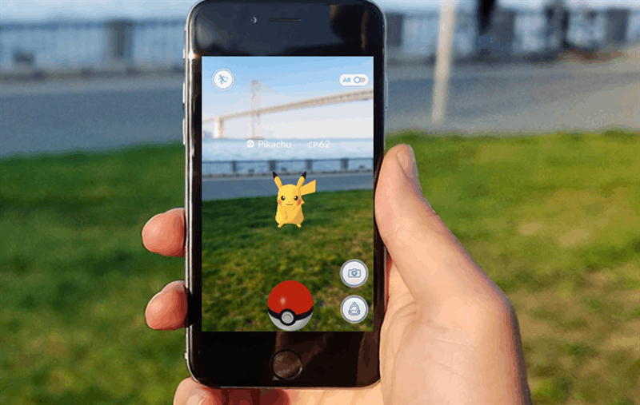

Pokémon GO

Pokémon GO é um jogo de realidade aumentada que transforma o mundo real em um mapa interativo onde você é o treinador. A gameplay baseia-se na exploração física: você deve caminhar por ruas e parques para encontrar Pokémon selvagens que aparecem na tela do celular via GPS. Para capturá-los, você arremessa Pokébolas com um deslizar de dedo, sem a necessidade de batalhar contra eles previamente. O jogo utiliza Poképaradas em pontos turísticos reais para fornecer itens e Ginásios para disputas territoriais entre três equipes (Instinct, Mystic e Valor). Além da coleta, você pode chocar ovos caminhando distâncias específicas, participar de Reides cooperativas para derrotar Pokémon Lendários e enfrentar outros jogadores na Liga de Batalha GO. Com mecânicas de fortalecimento baseadas em Doces e Poeira Estelar, o jogo incentiva a interação social e o exercício, mantendo-se atualizado com eventos constantes, como o Dia Comunitário, e a presença da vilanesca Equipe GO Rocket.
| Gênero | Aventura, Realidade Aumentada, Mobile |
|---|---|
| Desenvolvedora | Niantic, Inc. |
| Data de Lançamento | 6 de julho de 2016 |